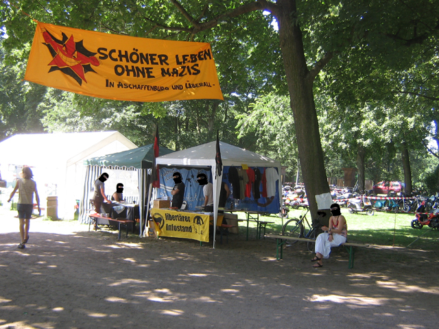

Die durch einen Medienrummel über Neonazis auf der Internetplattform „Myspace“ bekannt gewordene „Kameradschaft Miltenberg“ unterhält seit Anfang September auch eine eigene Website. Zuvor veröffentlichte sie im Internet drei Ausgaben des „Mainbogens“, einer Zeitung im digitalen PDF-Format (von denen im Moment nur 1 Ausgabe abrufbar ist). Neben Textauszügen aus Literatur des so genannten „Dritten Reiches“ gibt es auch selbst verfasste Kommentare und Artikel von solch illustren Autoren wie „Fleischmütze“, „Dreckschleuder“ und vor allem Pascal „Calli“ Scholz (wohnhaft in Miltenberg), der auch als Verantwortlicher im Sinne des Presserechts auftritt und zusammen mit zwei Kameraden als einer der wenigen regionalen Neonazis auf der NPD-Kundgebung im Juni letzten Jahres in Miltenberg anwesend war. Seitdem wurden in Miltenberg immer wieder Nazi-Aufkleber verklebt, ebenso fand ein Treffen des „Mainfranken-Stammtisch“ (ein Treffen regionaler Neonazis) in der Nähe von Miltenberg statt. [mehr]>>
Archiv Seite 8
Die Gewerkschaft Erziehung und Wissenschaft informiert mit einem Flyer über den rechtsradikalen Hintergrund der „Schauspielerin“ Sigrid Schüßler, die mit ihrem Kinderprogramm nicht nur auf vielen kommunalen Veranstaltungen auftritt sondern auch gerne mal beim Bayerntag der NPD, genauso wie sie neben Main-Echo und Prima Sonntag auch in der Deutschen Stimme ihren Platz findet. Auf welche Art und Weise sie versucht Kinder zu beeinflussen lässt sich an diesem Auszug aus einem Interview mit der DS sehen:
„…, und dann helfe ich ihnen, bis wir da sind, wo ich
mit ihnen hinwollte. Wenn sie zum Beispiel den
Frosch immer und immer wieder mit einem Kuß erlösen
wollen, dann sage ich: »Ahh, wir sind doch hier
nicht in einem Walt-Disney-Hollywood-Film, kennt ihr
denn gar nicht die Brüder Grimm? Also ein für allemal:
Mädchen küssen keine Frösche! Das ist Ihhhhhhhh!«
Das muß man den Kindern wirklich früh genug sagen,
es gibt doch schon genug ätzende »Frösche« in unserem
Land. Und was macht man bei den Brüdern
Grimm damit? Man klatscht sie an die Wand! Und alles wird gut. …“
Ausdrucken und Verbreiten ausdrücklich erwünscht!
Über die Hexe Ragna.pdf
Keinen Fußbreit Boden für Faschisten – Hexe Ragna das Lebkuchenhaus wegfuttern!
Wie im Main-Echo vom 02.10.2007 zu lesen ist wurden in der Nacht von Samstag auf Sonntag in Niedernberg Naziparolen in der Biet-, Ring- und Römerstraße auf den Asphalt gesprüht, darunter „88″, „Odin statt Jesus“ und „Neger“.
Verdächtigt werden Jugendliche die gegen Mitternacht auf der Straße herumgrölten, die Aschaffenburger Kripo hat die Ermittlungen aufgenommen.
Bereits seit 2 Jahren wird im Bayrischen Verfassungsschutzbericht eine Band Namens „Damage Incorporated“ aus Aschaffenburg aufgeführt. Diese Veröffentlichte nun Anfang September ihre erste CD mit dem Titel „Heute Nacht passiert noch was“ auf dem Label „Street Fight Versand“, das seinen Sitz in Münster (bei Dieburg) hat. Damit aber noch nicht genug, die Band spielte am 1.09. bei einem Ian Stuart – Gedenkkonzert in Belgien vor etwa 500 Leuten, zusammen mit Szenegrößen wie Oidoxie und No Remorse. Interessant dabei ist das es sich nicht um ein Blood & Honour Konzert gehandelt hat, sondern Bands und Veranstalter eher dem C-18 Spektrum zuzuordnen sind.
Auf diesem Bild ist ein Neonazi aus der Obernburger Region mit einem Shirt der Band zu sehen.
Aufgrund der zunahme antifaschistischer Aktivitäten in Mömlingen (LK Miltenberg) versucht der Aschaffenburger Staatsschutz, namentlich durch Herrn Reis, engagierte Menschen einzuschüchtern bzw. für eigene Zwecke einzuspannen.
[mehr]>>
Da möglicherweise auch schon andere Menschen angesprochen wurden oder noch werden, bitten wir alle, jegliche Kontaktaufnahme durch den VS/ Staatschutz/ oder Polizei zu verweigern und ebenfalls damit an die Öffentlichkeit zu gehen. Damit wollen wir erreichen, dass sich auch Andere trauen „NEIN“ zu sagen – es bestehen nämlich keinerlei Verpflichtungen, sich auch nur ansatzweise auf ein solches Gespräch einzulassen, schon gar nicht mit dem Hintergedanken der „Gegenausforschuing“ – das führt nämlich zu NIX. Die Öffentlichkeit schützt außerdem davor diese repressiven Maßnahmen alleine bewältigen zu müssen.
Wie die Geschichte zeigt sind solche Anwerbeversuche nichts Besonderes und deshalb gibt es auch keinen Grund sich davon einschüchtern zu lassen.
Der Geheimdienst will die Linke ausforschen und unterwandern. Spätestens seit der Gegenmobilisierung zum G8-Gipfel in Heiligendamm hat sich gezeigt, dass eine neue Bewegung innerhalb der Linken aufgekommen ist. Unzählige neue Projekte und Vernetzungen quer durch alle Strömungen machen es für den VS interessant, gerade jetzt wieder vermehrt nach InformantInnen und geheimen MitarbeiterInnen Ausschau zu halten.
Es kam auch in anderen Städten zu „Anwerbeversuchen“, doch ist dies nur eine Art der Einschüchterung. Ebenso gehören auch die unzähligen Hausdurchsuchungen vor und nach dem Gipfel, u. a. auch die Verhaftungen in Berlin und Brandenburg, und die neuen Vorstöße der Innenminister nach Ausweitung der repressiven Kompetenzen dazu.
Dem werden wir uns entschieden entgegenstellen. Nach wie vor gilt: Anna und Arthur halten´s Maul bei Verfassungsschutz und Polizei!
Hier mal ein paar Tips für ähnliche Situationen [mehr]>>
Die meisten lassen sich einfach treiben, flanieren unter dem grellgelb leuchtenden Banner mit der Aufschrift »Schöner leben ohne Nazis« vorbei. Neben dem Knasthilfe-Trödelmarkt entspannt ein junges Paar bei Bier und Zigaretten in der Sonne. Am Infostand des Peru-Hilfsprojekts ist einiges los, die Jungs und Mädels von der Antifa sind gekommen und am Attac-Stand beugt man sich mit ernster Miene über die Infobroschüren.
So weit das Main Echo, und wären am frühen Samstagmorgen nicht ein haufen Flyer des „Widerstand Aschaffenburg“ heldenhaft auf den Zeltplatzweg gestreut worden – es hätte nichts zu meckern gegeben. Eigentlich lustig das Nazis durch den Besuch des Kommz linke, kulturelle Arbeit finanziell unterstützen. Aber bleibt nächstes mal einfach weit weg, euch braucht niemand und eure Flyer sind im Dreck gelandet – dort wo sie hingehören.
Neben dem Alljährlichen „libertären Infostand“ und dem Büchertisch des Alibri-Verlag gab es diese Jahr auch eine Premiere, es wurde die erste gedruckte Ausgabe der auszeit-news verteilt. Noch nicht besonders umfangreich, aber heiß begehrt. Wenn alles glatt geht wird es die in Zukunft öfter geben, haltet einfach mal die Augen auf.

Nach verschiedenen Info-Veranstaltungen über die Mömlinger Neonazi-Szene kam es jetzt offenbar zu einer militanten Aktion gegen den Tattoo-Shop „Low-Life-Rebel“, folgender Text ist de.indymedia.org entnommen:
Wie auf der Website des Low-Life-Rebel Tattoo-Shops in Mömlingen (LK Miltenberg) zu lesen ist kam es in der Nacht vom 11. auf den 12.07. zu Glasbruch und Farbschmierereien
Der Inhaber des Ladens ist Marco Träger, der neben dem Studio in Mömlingen noch ein weiteres in Ebermannsdorf (bei Amberg) unterhält. Zu seinen Stammkunden gehören u.a. der Aschaffenburger Neonazi Oliver Merget. Im Schaufenster des Shops wurde mit einem Skrewdriver-Tattoo und mit Nordisch-Mytischen Motiven geworben, in einer Internet-Galerie waren noch deutlichere Neonazi-Motive zusehen, diese wurden aber aus dem Netz genommen. Vor kurzem begann Träger in seinem Shop auch Bekleidung zu verkaufen.
In Mömlingen hat sich seit Jahren eine feste Neonazi-Szene etabliert, vor allem sticht dabei die Blood & Honour Nachfolgeorganisation White Unity hervor
Mehr zu Mömlingen:
Zusammenfassung der Naziaktivitäten
Vortrag in Mömlingen
Tag gegen Rechts in Mömlingen
gibt noch mehr, benutzt einfach mal die Suchfunktion
Norbert Geis, Bundestagsabgeordneter des Wahlkreises Aschaffenburg, hat in einem Interview mit dem Deutschlandfunk die Vorschläge von Schäuble zur gezielten Tötung und Sicherheitsverwahrung ohne Prozess von (vermeintlichen) Terroristen unterstützt. Hier ein kleiner Auszug aus einem Artikel der bei telepolis.de erschienen ist:
Das „Neue“, nämlich statt unmittelbarer Lebensgefahr die potenzielle Bedrohung als Tötungslegitimation, macht Geis auch später ganz umstandslos deutlich:
Geis: Wenn Sie aber ganz konkret fragen, ich bin natürlich dafür, dass wir einen potenziellen Aggressor, einen Terroristen, der unser Land bedroht, dass wir den natürlich liquidieren können müssen, sonst setzen wir uns unnötig unter Umständen einem Anschlag aus. Wenn ich dadurch Anschläge verhindern kann, muss es möglich sein, solche Anschläge schon im präventiven Bereich abzuwehren.
Mit nicht allzuhohem argumentativen Aufwand weist Geis auch jede Möglichkeit von sich, dass die Verschärfung der Sicherheitsmaßnahmen die Freiheit einschränken könnte:
Geis: Wir brauchen die Sicherheit, um die Freiheit zu haben. Und wenn unsere Sicherheit angegriffen wird, wird damit auch im nächsten Schritt unsere Freiheit angegriffen. Sicherheit und Freiheit sind dieselbe Medaille. Und deswegen halte ich davon nichts zu sagen, indem wir unsere Sicherheit versuchen noch sicherer zu machen, als wir sie haben, würden wir damit unsere Freiheit beschädigen. Davon halte ich nichts.
Das ist zirkuläres Denken in Schablonen und soll verdecken, dass Sicherheit und Freiheit unterschiedliche Dimensionen sind, die nicht so eng zusammenhängen, wie dies Geis suggerieren möchte. Er scheint nahezulegen, dass eine Verminderung der Sicherheit auch eine Verminderung der Freiheit nach sich ziehen würde, was ebenso wenig zutrifft wie der Umkehrschluss, dass eine Verstärkung der Freiheit auch eine höhere Sicherheit mit sich bringt. Sicherheit ist auch für totalitäre Staaten und ihre Machtelite wichtig, hier geht sie aber eindeutig auf Kosten der Freiheit der Restbevölkerung. Und wachsende Sicherheit bringt auch in demokratischen Staaten nicht gleichmäßig allen Einwohnern wachsende Freiheit, zumindest für einige Bevölkerungsschichten – beispielsweise jene, die unter Generalverdacht stehen – führt dies zu Einschränkungen der Freiheit.
Das ganze Interview
Norbert Geis ist Vorsitzender des CSU-Kreisverbandes Aschaffenburg und rechtspolitischer Sprecher der CDU/CSU-Fraktion. Als rechter Hardliner hetzte er gegen die gesetzliche Verankerung der gleichgeschlechtlichen Lebenspartnerschaft (Geis bezeichnet Schwule als ’schwachsinnig‘ und ‚pervers‘,
Der körperliche Kontakt zu Homosexuellen sei ‚höchstgefährlich) und verteidigte die Antisemitische Rede von Martin Hohmann.


{kind=link}